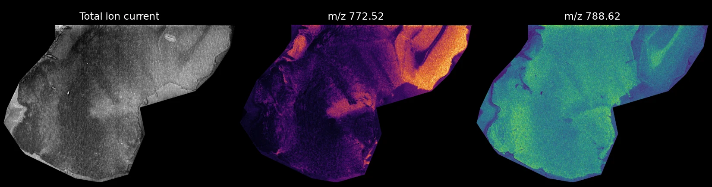

Convert imaging mass spectrometry data into one open format¶
Thyra reads the files your instrument writes and saves them in SpatialData, an open format that analysis and viewing tools can read. Bruker, Waters and PHI data work, and so does imzML from any vendor.
You do not need to know how to program. You install Thyra once. After that, converting a dataset is one command.
Install Thyra Try it in your browser
The browser version runs in Google Colab, so it needs a Google account but nothing on your computer. It converts example data, or an imzML file you upload.

A sagittal mouse brain section converted with Thyra: the total ion current and two ion images. MALDI-MSI data from 10.5281/zenodo.18326569 (CC-BY-4.0), the dataset in the Tutorial.
How it works¶
- Install Thyra. The Install page walks you through it.
-
Convert a dataset. Give Thyra your data and a name for the result:
-
Open the result in any tool that reads SpatialData. See Look at the result.
Thyra works out the file type, the pixel size and the m/z axis for you.
What you can convert¶
| Your instrument | Point Thyra at |
|---|---|
| Bruker timsTOF or solariX | the folder ending in .d |
| Bruker rapifleX | the acquisition folder |
| Waters (MassLynx) | the folder ending in .raw |
| PHI nanoTOF (ToF-SIMS) | the file ending in .raw |
| Any instrument that exports imzML | the .imzML file, with its .ibd file next to it |
Thyra can also read mzPeak files. That support is experimental.
What you get¶
One folder ending in .zarr. It holds:
- the spectrum of every pixel, on one shared m/z axis
- an image of the total ion current (TIC)
- the optical image of the slide, when the acquisition has one
- the details of the acquisition: instrument, settings and pixel size
Where to go next¶
- New to Thyra? Start with Install, then Your first conversion.
- Want to see it work first? Part 1 of the Tutorial uses example data and takes about a minute once Thyra is installed.
- Converting your own data? See Which files can I convert? and Change how Thyra converts.
- Want every detail? The Technical reference covers every option and every format.
Acknowledgments¶
The Thyra logomark and logotype were designed by Nepsis Scriptorium.
Thyra is built on SpatialData, Zarr and pyimzML.